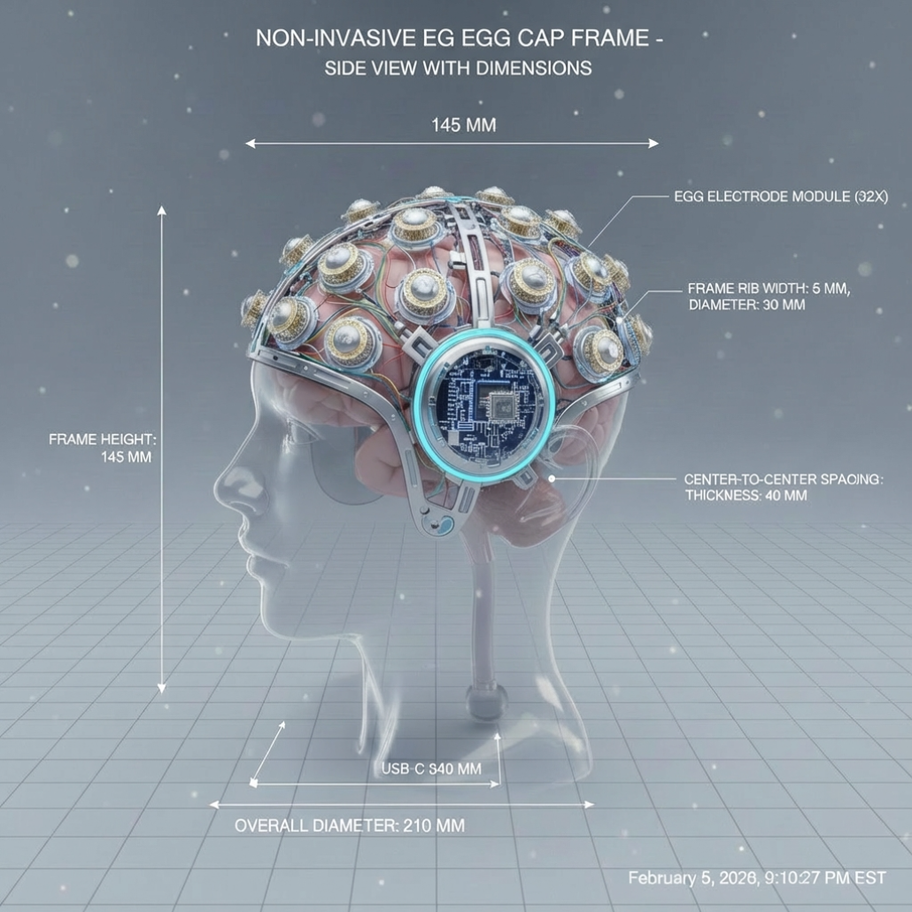

脑机接口家居控制
Brain-Computer Interface · Smart Home Control
脑电图像重建
情感检测
运动想象
语音交互
Super Brain——非侵入式脑机接口 · 智能家居控制系统
情感脑机接口
情感检测
24 通道脑电波实时分析，自动检测用户的情感状态（放松 / 焦虑 / 压力等），并提供医学解释。
运动想象接口
MI 智能家居
通过想象肢体运动（左手、右手、双脚）驱动智能家居设备，无需语音与动作依赖，展示 MI 的自然人机交互优势。
视觉信息接口
脑电图像重建
基于 EEG 信号重建任务意图图像，并映射到控制家居的具体任务，支持连续决策演示。
语音识别与对话
智能管家语音交互
支持浏览器语音识别与"管家"模型响应，模拟家居控制与场景对话，适合演示自然语言交互体验。

非侵入式 EEG 设备 · 示意图
年轻人未来新穿戴设备 · Brain pods
从主系统一键进入未来穿戴场景，体验专注增强、情绪陪伴和跨设备联控。